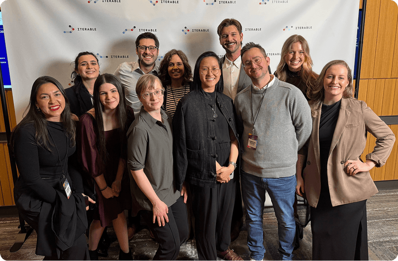
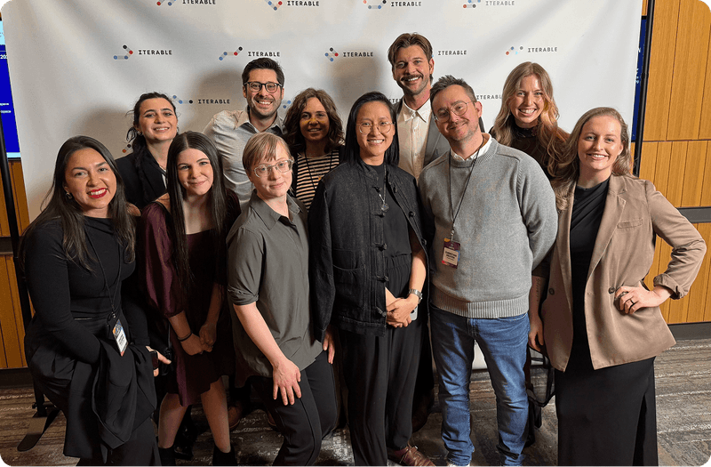

Building a culture of trust
Fostering psychological safety, cross-functional dependability, and customer-centered empathy to enable great work.

Great design happens when people feel safe to take risks, push boundaries, and grow together. At Iterable, I cultivated a culture rooted in trust and collaboration, enabling our team to thrive in a fast-paced, distributed environment.
Our Product Design Team Charter reflects these shared principles: communicate candidly, support each other, and raise the bar for quality, all while staying kind and inclusive. This culture helped us achieve a team engagement score of 100%, 21 percentage points above the company average.

Trust and excellence go hand in hand. I worked across product, engineering, and customer teams to ensure design was seen as a dependable, non-blocking partner. By facilitating collaboration and creating clarity, I helped the team consistently deliver with precision and creativity. Our focus on Clarity, Autonomy, Meaning, Progress, and Social Inclusion ensured the team felt supported and energized, even while holding ourselves to best-in-class standards.

 



This culture of trust shaped not just how we worked with each other but also how we designed for our users. We led with empathy, deeply understanding customer needs and challenges, while upholding a strong sense of accountability to ship thoughtful, high-quality experiences. Internally and externally, trust has been the cornerstone of raising the bar for what design can achieve.